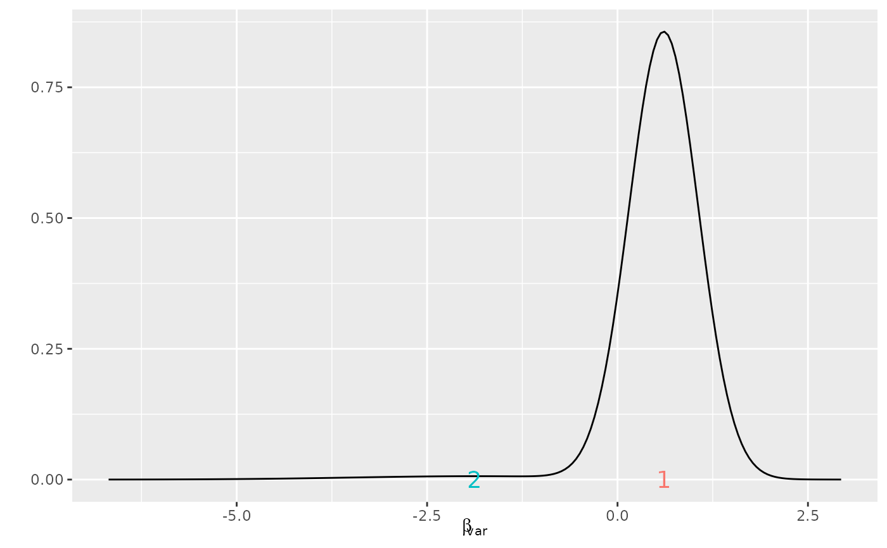
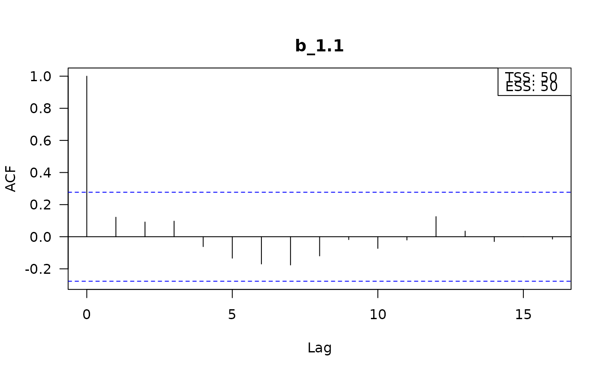
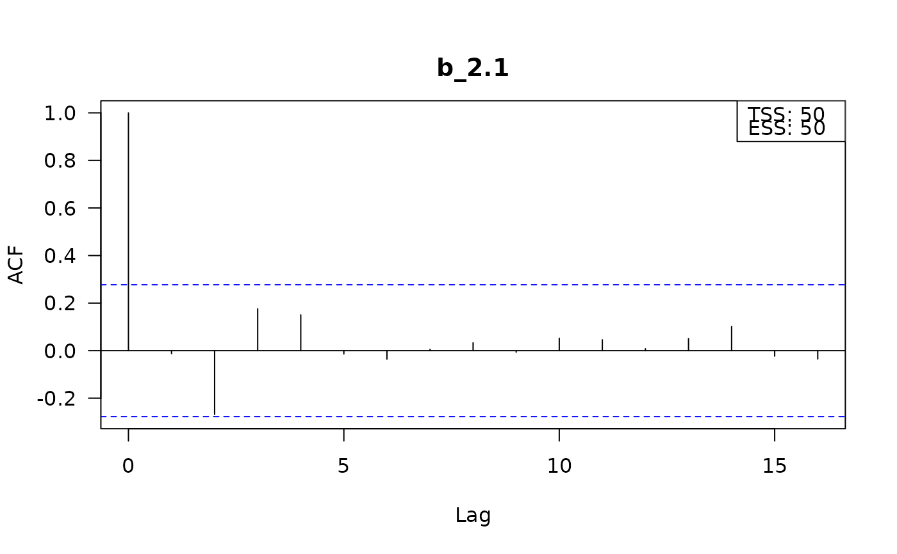
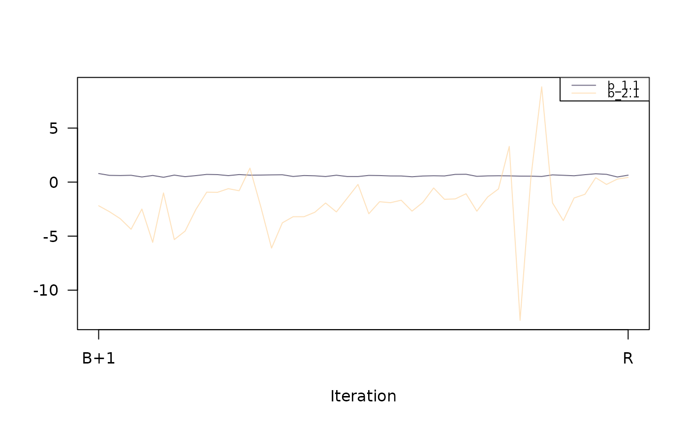
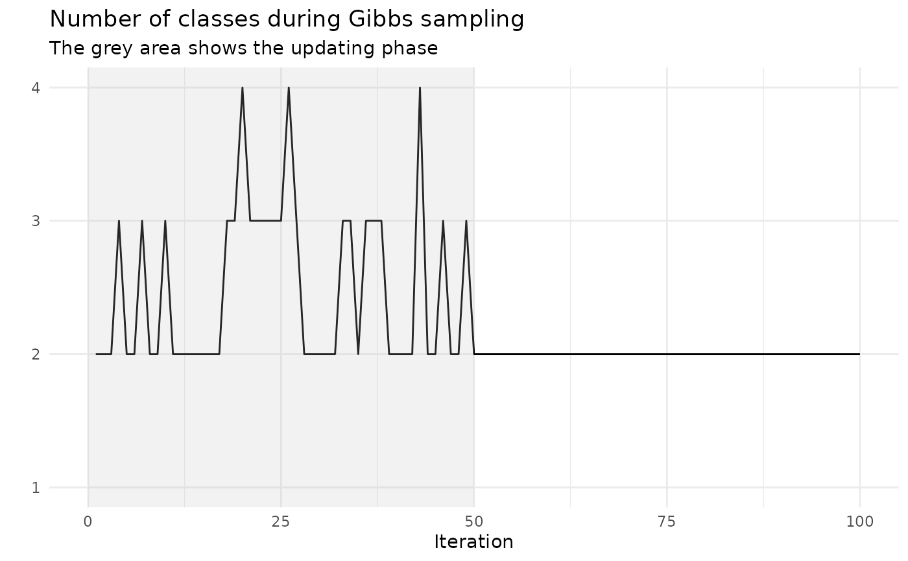

This function is the plot method for an object of class RprobitB_fit.
Usage
# S3 method for class 'RprobitB_fit'
plot(x, type, ignore = NULL, ...)Arguments
- x
An object of class
RprobitB_fit.- type
[
character(1)]
The type of plot, which can be one of:"mixture"to visualize the mixing distribution,"acf"for autocorrelation plots of the Gibbs samples,"trace"for trace plots of the Gibbs samples,"class_seq"to visualize the sequence of class numbers.
- ignore
[
character()]
Covariate or parameter names that do not get visualized.- ...
Currently not used.
Examples
set.seed(1)
form <- choice ~ var | 0
data <- simulate_choices(form = form, N = 100, T = 10, J = 3, re = "var")
model <- fit_model(
data = data, R = 100, latent_classes = list(C = 2, "dp_update" = TRUE)
)
#> Computing sufficient statistics - 0 of 4
#> Computing sufficient statistics - 1 of 4
#> Computing sufficient statistics - 2 of 4
#> Computing sufficient statistics - 3 of 4
#> Computing sufficient statistics - 4 of 4
#> Gibbs sampler - 1 of 100 iterations (C = 2)
#> Gibbs sampler - 10 of 100 iterations (C = 2)
#> Gibbs sampler - 20 of 100 iterations (C = 3)
#> Gibbs sampler - 30 of 100 iterations (C = 2)
#> Gibbs sampler - 40 of 100 iterations (C = 2)
#> Gibbs sampler - 50 of 100 iterations (C = 3)
#> Gibbs sampler - 60 of 100 iterations (C = 2)
#> Gibbs sampler - 70 of 100 iterations (C = 2)
#> Gibbs sampler - 80 of 100 iterations (C = 2)
#> Gibbs sampler - 90 of 100 iterations (C = 2)
#> Gibbs sampler - 100 of 100 iterations (C = 2)
plot(model, type = "mixture")

plot(model, type = "acf", ignore = c("s", "Omega", "Sigma"))


plot(model, type = "trace", ignore = c("s", "Omega", "Sigma"))

plot(model, type = "class_seq")
